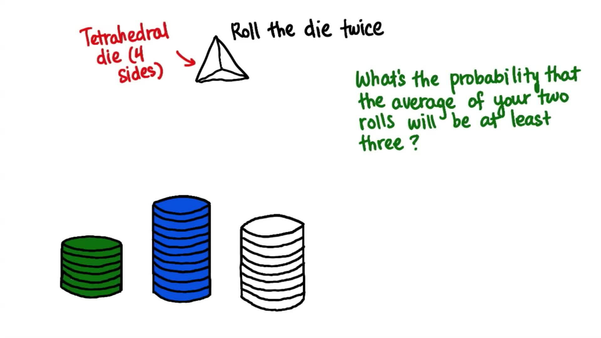

02. 在拉斯维加斯赌博
在拉斯维加斯赌博
Question:
Start Quiz:

INSTRUCTOR NOTE:
你的两次投掷结果平均值至少为 3 的概率是多少？随便猜一下:)
正四面体骰子每次抛出的结果为 1、2、3 或 4。如果你想知道原理所在，请参阅这个帖子。
写下比例形式的答案。
在拉斯维加斯赌博
正四面体骰子每次抛出的结果为 1、2、3 或 4。如果你想知道原理所在，请参阅这个帖子。
写下比例形式的答案。